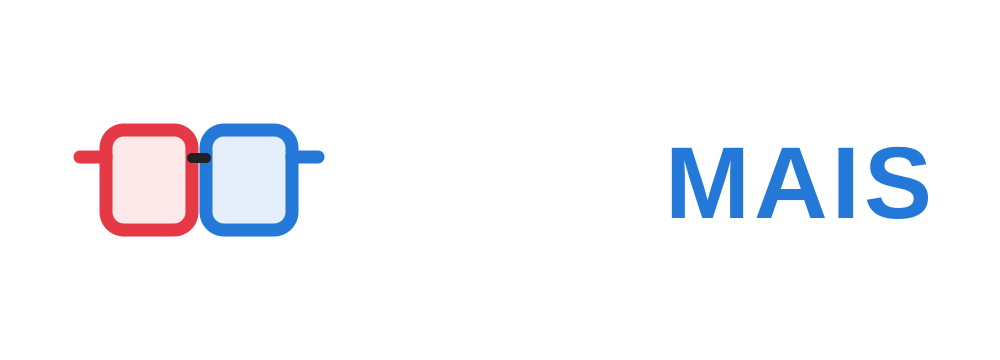
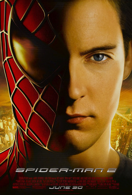
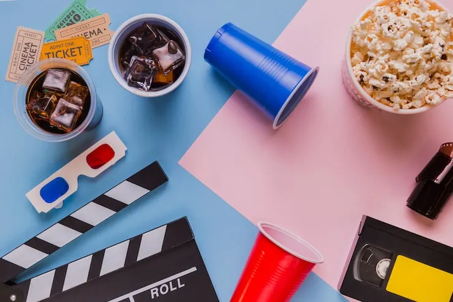

Em Homem-Aranha 2, após derrotar o Duende Verde, a vida de Peter Parker (Tobey Maguire) muda por completo. Temendo que Mary Jane (Kirsten Dunst) sofra algum risco por ser ele o Homem-Aranha, Peter continua escondendo o amor que sente e se mantém longe dela. Ao mesmo tempo precisa lidar com Harry (James Franco), seu melhor amigo, cuja raiva pelo Homem-Aranha aumenta cada vez mais por considerá-lo como sendo o assassino de seu pai. Além disso sua tia May (Rosemary Harris) passa por uma fase difícil após a morte de seu tio Ben, estranhando também o comportamento do sobrinho. Enquanto precisa lidar com seus problemas particulares Peter recebe ainda uma má notícia: o surgimento do Dr. Octopus (Alfred Molina), um homem que possui tentáculos presos ao corpo.
Filmes exibidos: 0
Nenhum filme encontrado.
Quantidade: 0
| Filme | Ano | Nota | Status | Premios |
|---|---|---|---|---|
| Toy Story | 1995 | 8.3/10 | Livre(L) | 1 Óscar Especial (Achievement Award) |
| Homem-Aranha no Aranhaverso | 2018 | 8.4/10 | 10 anos | 1 Óscar de Melhor Filme de Animação |
| Vingadores: Ultimato | 2019 | 8.4/10 | 12 anos | Vencedor de vários Saturn Awards e indicações ao Óscar |
| O Senhor dos Anéis: A Sociedade do Anel | 2001 | 8.8/10 | 14 anos | Vencedor de 4 Óscares |
| O Exterminador do Futuro 2: O Julgamento Final | 1991 | 8.6/10 | 16 anos | Vencedor de 4 Óscares (Efeitos Visuais, Som, etc.) |

O Cine Mais é um catálogo feito para quem gosta de cinema e quer descobrir o que assistir. Aqui você encontra filmes em destaque e em alta, além de informações sobre gêneros, anos de lançamento, avaliações, classificações e prêmios. Explore as categorias, conheça novas histórias e encontre seu próximo filme favorito.
.png)